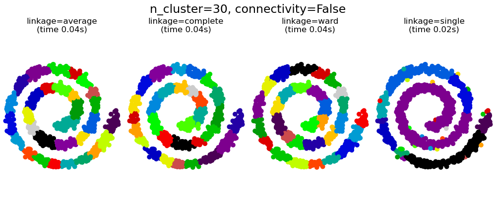
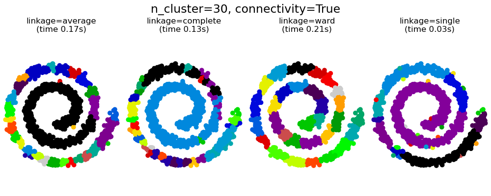
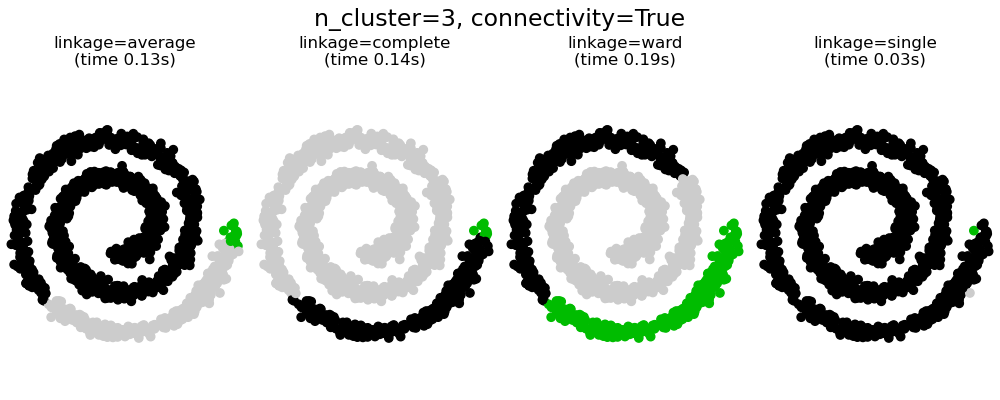

Nota
Haz clic aquí para descargar el código completo del ejemplo o para ejecutar este ejemplo en tu navegador a través de Binder
Agrupamiento aglomerativo con y sin estructura¶
Este ejemplo muestra el efecto de imponer un gráfico de conectividad para capturar la estructura local de los datos. El gráfico es simplemente el gráfico de 20 vecinos más cercanos.
Se pueden observar dos consecuencias de imponer una conectividad. En primer lugar, el agrupamiento con una matriz de conectividad es mucho más rápida.
En segundo lugar, cuando se utiliza una matriz de conectividad, el enlazamiento simple, promedio y el completo son inestables y tienden a crear unos pocos conglomerados que crecen muy rápidamente. De hecho, el enlazamiento promedio y el completo combaten este comportamiento de filtración o percolación al considerar todas las distancias entre dos conglomerados al fusionarlos (mientras que la conexión simple exagera el comportamiento al considerar sólo la distancia más corta entre conglomerados). El grafo de conectividad rompe este mecanismo para el enlazamiento promedio y completo, haciendo que se parezcan al enlazamiento simple, más frágil. Este efecto es más pronunciado para los grafos muy dispersos (prueba disminuir el número de vecinos en kneighbors_graph) y con el enlazamiento completo. En particular, tener un número muy pequeño de vecinos en el grafo, impone una geometría que se aproxima a la del enlazamiento simple, que es bien conocida por tener esta inestabilidad de filtración.
- 

- 
- 
# Authors: Gael Varoquaux, Nelle Varoquaux
# License: BSD 3 clause
import time
import matplotlib.pyplot as plt
import numpy as np
from sklearn.cluster import AgglomerativeClustering
from sklearn.neighbors import kneighbors_graph
# Generate sample data
n_samples = 1500
np.random.seed(0)
t = 1.5 * np.pi * (1 + 3 * np.random.rand(1, n_samples))
x = t * np.cos(t)
y = t * np.sin(t)
X = np.concatenate((x, y))
X += .7 * np.random.randn(2, n_samples)
X = X.T
# Create a graph capturing local connectivity. Larger number of neighbors
# will give more homogeneous clusters to the cost of computation
# time. A very large number of neighbors gives more evenly distributed
# cluster sizes, but may not impose the local manifold structure of
# the data
knn_graph = kneighbors_graph(X, 30, include_self=False)
for connectivity in (None, knn_graph):
for n_clusters in (30, 3):
plt.figure(figsize=(10, 4))
for index, linkage in enumerate(('average',
'complete',
'ward',
'single')):
plt.subplot(1, 4, index + 1)
model = AgglomerativeClustering(linkage=linkage,
connectivity=connectivity,
n_clusters=n_clusters)
t0 = time.time()
model.fit(X)
elapsed_time = time.time() - t0
plt.scatter(X[:, 0], X[:, 1], c=model.labels_,
cmap=plt.cm.nipy_spectral)
plt.title('linkage=%s\n(time %.2fs)' % (linkage, elapsed_time),
fontdict=dict(verticalalignment='top'))
plt.axis('equal')
plt.axis('off')
plt.subplots_adjust(bottom=0, top=.83, wspace=0,
left=0, right=1)
plt.suptitle('n_cluster=%i, connectivity=%r' %
(n_clusters, connectivity is not None), size=17)
plt.show()
Tiempo total de ejecución del script: (0 minutos 2.729 segundos)